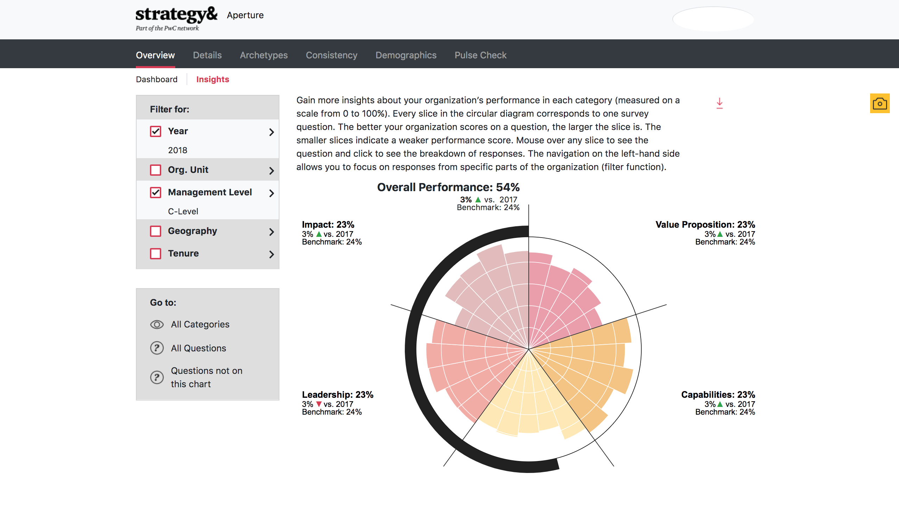
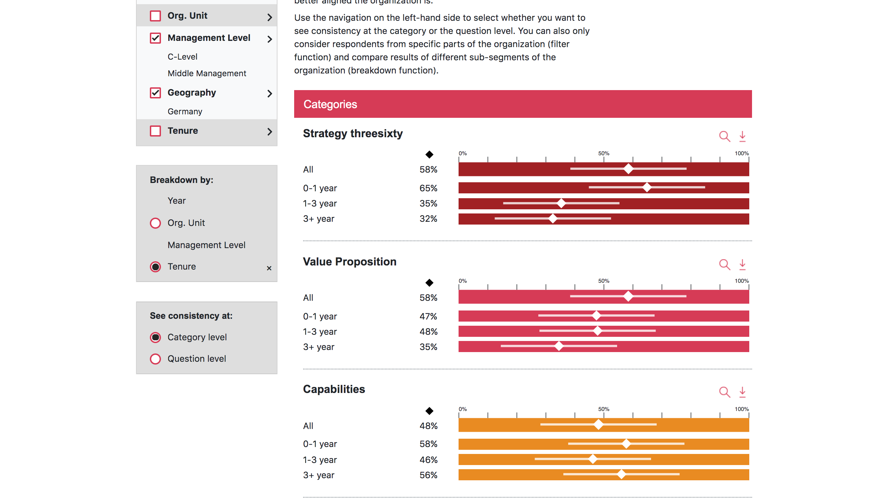

Strategy& (PwC) · 2018 · Analytics web app
Aperture — an organisation, read through its own surveys
Aperture is a web app built for Strategy& (PwC) in 2018 that lets a company walk through its own employee survey one question at a time, from the whole org down to a single team.

Five ways into the same data
Strategy& asked for more than a results dump, so the app offers five views onto the survey: overview, archetypes, consistency, demographics and pulse. Each answers a different question an executive tends to ask, from how are we doing overall to which groups disagree with each other.
The dial
At the centre sits a radial chart where every slice is one survey question, drawn in D3 and benchmarked against comparators so a score never floats alone. It updates live as filters change, which is where the thing earns its keep — you watch a question's standing shift the moment you narrow the population.
Slicing the room
One survey covers a lot of people, so the filters cut along year, org unit, management level, geography and tenure. Analysts stack those to isolate, say, mid-level managers hired in the last two years in one region, then read the same dial for just that slice.
Off the screen and into the deck
Consultants live in slide decks, so PDF and PNG export come straight from any view. A slice someone framed on screen leaves as an image they can drop into a client report without redrawing it by hand.
